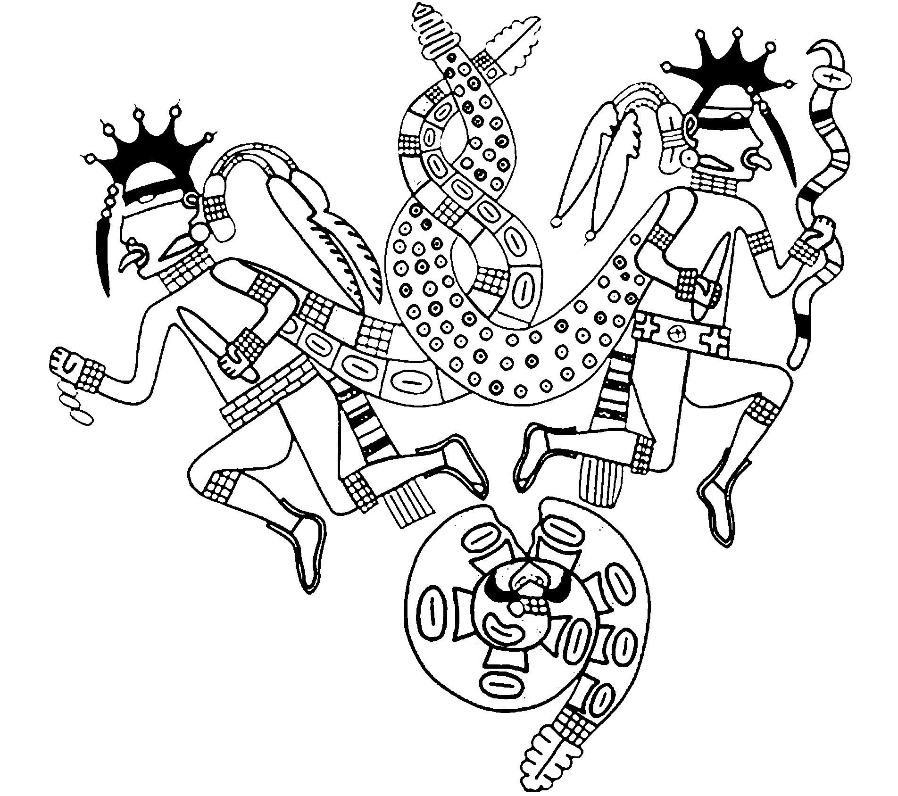

philosophy and spirituality
The Pythagorean school, led by the 6th-century BCE Greek philosopher Pythagoras, was among the earliest systems to regard numbers as fundamental to understanding existence. Pythagoras’s life remains enigmatic, with debates surrounding whether he or his followers were responsible for the discoveries attributed to him, such as the Pythagorean theorem. Pythagorean philosophy treated numbers as more than mere tools for measurement; they were considered fundamental elements shaping both the cosmos and personal identity. Numbers were believed to possess a qualitative nature, regarded as more real than matter itself. This philosophical view significantly influenced their metaphysical framework, where numbers were seen as revealing truths about the universe and human existence.
In Pythagorean thought, the number 2, or Dyad, symbolized differentiation and relationships, illustrating how dualities shape nature. This interpretation extended to the principle that all things either “are” numbers or “resemble” numbers, suggesting that every element of the universe could be understood through numerical relationships. Pythagoreans also associated numbers with abstract qualities: justice was linked to 4, while marriage corresponded to 5. These associations emphasized the symbolic and metaphysical depth of numbers, bridging the physical and spiritual worlds.
Pythagorean Views on the Number 2
The Pythagorean Dyad, or the number 2, symbolized duality and opposition, marking the first step away from unity. It represented the interplay of contrasting forces—such as light and dark, male and female, and yin and yang—that form the fabric of existence. This duality was viewed as inherent in nature and essential for relationships and differentiation. Pythagoras’s followers even ascribed genders to numbers, considering even numbers like 2 as female and associated with receptivity and opinion. This association underscored the Dyad’s role in creating balance amid opposing forces, reinforcing its significance in maintaining harmony.
More than a symbol, the Dyad was believed to embody a qualitative essence that structured the universe itself. Its representation of relationships and opposition played a pivotal role in the Pythagoreans’ mystical and mathematical worldview, emphasizing the necessity of tension and balance for comprehending reality.
Contemporary Perspectives on Duality
Modern philosophy continues to explore duality as a concept rooted in Pythagorean thought. The Dyad remains relevant in understanding the dynamic tension between opposites—tangible and intangible, material and spiritual. This foundational perspective on duality aligns with modern dualism, particularly in discussions of the mind-body dichotomy and the relationship between thought and physical reality.
Plato’s theory of Forms further developed this concept, positing a non-material realm of perfection that underpins the imperfect material world. This dualistic framework informs contemporary debates on existence, morality, and societal structures, demonstrating the enduring relevance of numerical dualism in shaping intellectual traditions. Pythagorean numerical symbolism, which associates abstract concepts like justice and balance with specific numbers, continues to influence philosophical and ethical discourse, underscoring the dialogue between ancient numerical philosophies and present-day intellectual exploration.
Duality in Pythagorean Practices and Rituals
The Dyad’s representation of duality influenced Pythagorean rituals and practices. Pythagoreans viewed numbers as the building blocks of reality, and their understanding of duality inspired practices that emphasized harmony amid contrasts. Pythagorean communities prioritized equilibrium, applying principles of duality to their communal living and ethical codes. These practices extended into their study of music, geometry, and astronomy, disciplines that sought to replicate cosmic harmony through numerical relationships.
The Pythagorean concept of harmony of the spheres posited that celestial bodies moved according to mathematical equations, producing a symphony of imperceptible music. This idea exemplified how duality and balance were integral to their understanding of the universe.
Duality in Spiritual Traditions
The number 2 holds spiritual meaning, symbolizing balance, partnership, and coexistence. It reflects the dualities observed in nature—light and dark, male and female—and emphasizes the interconnectedness of opposing forces necessary for growth and harmony. In Chinese philosophy, yin-yang represents this duality, showing how opposites are interdependent and create a unified whole. Similarly, spiritual practices across traditions, including Hinduism and Native American beliefs, recognize the importance of balance between complementary energies.
The number 2 resonates with personal relationships and collaboration, urging individuals to nurture connections in their lives. Spiritually, it signifies diplomacy, intuition, and unity, encouraging mindfulness in both internal and external interactions. It serves as a reminder to embrace kindness, cooperation, and mutual support as pathways to personal and collective harmony.
Symbolism of 2 Across Philosophies
Philosophically, the number 2 embodies the interplay of opposites and the necessity of balance. It represents the duality inherent in life, such as the rhythmic cycles of day and night, light and dark, and masculine and feminine energies. These opposing forces, though contrasting, are deeply interconnected, fostering harmony and growth. In spiritual contexts, the number 2 symbolizes partnerships, reflection, and mutual understanding. It emphasizes the importance of relationships—romantic, platonic, or professional—in achieving balance and fulfillment. Through cooperation and shared perspectives, individuals can navigate the complexities of existence while maintaining equilibrium. The symbolic richness of the number 2 extends beyond numerical traditions, offering insights into the universe’s structure and the interconnectedness of all things. Its lessons of harmony and opposition continue to inspire spiritual practices and philosophical thought.
The Number 2 in Spiritual Practices
In many spiritual rituals, the number 2 signifies duality and coexistence. This principle is especially evident in Taoism’s yin-yang, where complementary forces unite to form a harmonious whole. Spiritual practices often incorporate pairs—objects, actions, or symbols—to represent the balance between opposing energies. Rituals emphasizing duality serve as reminders of the cyclical and interdependent nature of existence. By honoring the interconnectedness of opposites, practitioners aim to achieve greater self-awareness and spiritual unity. These practices reflect the enduring significance of the number 2 in guiding individuals toward harmony within themselves and the broader universe.
Pythagorean Philosophy and the Cosmos
Pythagoras and his followers regarded numbers as the essence of the cosmos. The Dyad represented duality as a foundational principle, shaping disciplines such as arithmetic, geometry, and harmonics. Pythagorean teachings on the Limited and Unlimited reflected their belief in duality as a universal archetype. Their concept of metempsychosis tied duality to the cyclical nature of life and death, further emphasizing their holistic view of balance in existence. The harmony of the spheres, a cornerstone of Pythagorean cosmology, highlighted the role of numerical relationships in maintaining cosmic order, underscoring the Dyad’s role in their metaphysical framework.
mathematics and science
Significance of the Number 2 in Mathematics
The number 2 holds a unique position in number theory as the only even prime number. This characteristic makes it fundamental in the study of integers and arithmetic functions. Prime numbers are defined as those with no positive divisors other than 1 and themselves. The fact that 2 is even and still prime means it is the only number divisible by 2 and itself, setting it apart from all other primes, which are odd.
The importance of 2 in number theory extends beyond its definition. As the first prime number, it serves as a building block from which many other properties of numbers are derived. German mathematician Carl Friedrich Gauss referred to mathematics as the “queen of the sciences” and number theory as the “queen of mathematics,” underscoring the significance of studying prime numbers, including 2, within this field. Number theorists explore the properties and patterns of prime numbers, and the unique status of 2 as the only even prime provides a foundational element for such investigations.
Moreover, in various number fields, the concept of even primes can be extended. For instance, in the ring of Gaussian integers, 2 is not considered a prime number because it can be factored into (1 + i)(1 − i), where i is the imaginary unit. This demonstrates that the special nature of 2 as an even prime can vary depending on the mathematical context.
Beyond pure mathematics, the number 2’s role as the only even prime has applications in numerous mathematical constructs and theories. Its duality, representing balance and partnership, extends metaphorically to the dual nature of many mathematical and scientific principles. Thus, the number 2 is not merely a simple digit but a symbol of fundamental importance in both mathematics and the broader scientific understanding of numerical relationships.
The Number 2 as a Foundation of Mathematical Principles
The number 2 holds a pivotal role in the realm of mathematics, being the smallest and only even prime number. This unique characteristic means it can only be divided by 1 and itself, underpinning its foundational position in number theory. As the first even number, 2 sets the stage for the concept of parity, distinguishing even numbers from odd ones and enabling the classification of integers into these two categories.
Moreover, the number 2 is instrumental in the construction of other numbers. It forms the basis for binary code, fundamental to computer science and digital systems. Binary code operates using only two digits, 0 and 1, with each digit representing a power of 2. This simplicity allows computers to perform complex calculations and process vast amounts of data.
In geometry, the number 2 is significant. A polygon with only two sides forms the simplest geometric shape—a line segment. This basic form is foundational to more complex geometric constructs and serves as an entry point to understanding dimensions and shapes.
The significance of the number 2 extends into various mathematical operations and principles. For instance, in arithmetic, basic operations like addition and subtraction often begin with the manipulation of 2 (e.g., 1 + 1 = 2). This simplicity makes the number 2 a crucial teaching tool for early mathematics education, helping to build foundational skills that are expanded upon in more advanced mathematical concepts.
The Symbolism of 2 in Scientific Contexts
The number 2 holds significance and symbolism in the realm of science, often representing fundamental principles and phenomena that shape our understanding of the universe. One of the most intriguing aspects of the number 2 in science is its association with duality, a concept that appears in various scientific disciplines.
In mathematics, the number 2 is unique as the first prime number and the only even prime number, highlighting its importance in number theory and its distinctive properties within the mathematical framework. This uniqueness extends to its role in representing symmetry, as the presence of two objects or entities often forms the basis for balanced and harmonious structures, essential in both natural and human-made systems.
In physics, the concept of duality is illustrated by wave-particle duality in quantum mechanics. This principle posits that quantum entities, such as light and matter, can exhibit wave-like and particle-like properties depending on the conditions. The discovery of wave-particle duality revolutionized our understanding of fundamental physical phenomena, leading to the development of quantum theory and reshaping our interpretation of concepts like superposition and entanglement.
Wave-particle duality exemplifies the symbolic significance of the number 2 in science by embodying the coexistence of two seemingly contradictory properties within a single entity. This duality challenges classical notions of particle and wave behavior while underscoring the interconnectedness of opposing forces. The dual nature of quantum objects highlights the limitations of classical descriptions and emphasizes the need for a more comprehensive understanding of reality, where duality plays a crucial role.
The number 2 is integral to time measurement, relying on relationships and comparisons. Without the interaction or movement of two distinct objects or reference points, the concept of measured time loses its meaning. For instance, the orbit of Earth around the Sun defines days and years, while the oscillation of a pendulum or the ticking of a clock depends on the interplay between two states. This dynamic highlights the symbolic significance of the number 2 as a representation of duality and interaction, serving as the foundation for measurement and emphasizing its pivotal role in understanding temporal phenomena.
Beyond time, the number 2 permeates various scientific disciplines, symbolizing unity and contrast, balance and division, and the interplay of dual forces. Its importance extends to shaping our understanding of the natural world and the principles that govern it.
Wave-Particle Duality: The Dual Nature of Matter and Light
Wave-particle duality is a fundamental concept in quantum mechanics that reveals the dual nature of quantum entities, which exhibit both particle-like and wave-like properties depending on the experimental conditions. This duality underscores the inadequacy of classical concepts such as “particle” and “wave” to fully capture the behavior of quantum objects.
Historically, during the 19th and early 20th centuries, light was primarily understood as a wave phenomenon. This perspective shifted with the discovery that light also exhibits particulate behavior, leading to the photon model of light. Similarly, electrons, initially regarded as particles, were later shown to have wave-like characteristics, a revelation that expanded the understanding of matter.
The principle of wave-particle duality holds that all matter and electromagnetic radiation possess both wave and particle properties. Louis de Broglie, in 1923, extended this duality to matter, proposing that particles with momentum have an associated wavelength, given by the de Broglie equation (λ = h/p), where h is Planck’s constant, p is momentum.
Wave-particle duality continues to be a topic of intense research and debate, challenging our understanding of the fundamental nature of light and matter. It is a cornerstone of quantum mechanics, with significant implications for interpreting the behavior of subatomic particles and understanding the universe at the most fundamental level.
The Role of Duality in Quantum Superposition and Entanglement
The principle of wave-particle duality influences the interpretation and application of other concepts in quantum mechanics, such as superposition and entanglement. Wave-particle duality refers to the phenomenon where quantum entities exhibit both particle-like and wave-like properties depending on the experimental conditions. This duality underpins the concept of superposition, where a quantum system can exist in multiple states simultaneously until measured. The wave-like properties allow for the overlapping of states, fundamental to the notion of superposition. Without duality, the classical understanding of particles existing in distinct, non-overlapping states would prevail, negating the possibility of superposition.
Furthermore, wave-particle duality is closely related to quantum entanglement. Quantum entanglement occurs when particles become interlinked in such a way that the state of one particle instantaneously influences the state of another, regardless of distance. The wave nature of quantum entities allows for the creation of entangled states where the properties of particles are not independently defined but exhibit correlations understood through wave-like interactions.
Cultural Symbolism
The number 2 has long been regarded as a symbol of duality, balance, and harmony across various cultures. Its importance extends beyond mathematics, representing fundamental truths about the world’s structure, the interplay of opposites, and the connections that bind individuals, communities, and the cosmos. Below is an exploration of the number 2 as a cultural and spiritual symbol in Hinduism, ancient Greek culture, Chinese traditions, and indigenous beliefs.
The Number 2 in Religion and Mythology
In Hindu culture and philosophy, the number 2 embodies duality as a cornerstone of the universe. This duality reflects the balance and interplay between opposing forces, such as light and darkness, male and female, creation and destruction, and good and evil. Hinduism teaches that these opposing elements are not in conflict but are interdependent, emphasizing that harmony can only be achieved when opposites coexist in balance.
One representation of this duality in Hinduism is the principle of Ardhanarishvara, where the deity Shiva is depicted as half-male and half-female, symbolizing the unity of masculine and feminine energies. Similarly, pairings such as Vishnu and Lakshmi or Rama and Sita highlight the importance of partnerships and the spiritual balance they represent. These sacred pairings reinforce the idea that balance in relationships—both divine and human—is critical for cosmic harmony.
The number 2 is reflected in natural cycles central to Hindu beliefs, such as day and night, birth and death, and the waxing and waning of the moon. These cycles illustrate the coexistence of opposites and the belief that growth and spiritual evolution arise from their interaction. In Hindu rituals, duality is emphasized through practices like offerings made in pairs, reflecting harmony and unity within the cosmos.
The Number 2 in Greek Mythology and Pythagorean Thought
In ancient Greek culture, the number 2 symbolized duality and balance, appearing prominently in mythology, philosophy, and religious rituals. Greek mythology often explored the relationship between opposites, such as light and darkness, life and death, and male and female, reinforcing the idea that the universe thrives on the interaction and balance of these forces.
The philosopher Pythagoras and his followers, the Pythagoreans, assigned sacred significance to numbers, viewing them as the building blocks of reality. For the Pythagoreans, the number 2, known as the Dyad, symbolized division and duality but also harmony and collaboration. The Dyad represented the first step away from unity (the Monad or 1), creating diversity and relationships in the universe.
The number 2 was associated with partnerships and the concept of unity through collaboration. This is reflected in Greek thought and mythology, where opposing forces depend on one another for balance. For example, the myth of Persephone and Demeter highlights the duality of life and death, as Persephone’s time in the underworld and her return to the earth symbolize the seasonal cycles of growth and decay. Such stories illustrate the cultural understanding of duality as essential for maintaining order in the universe.
For the Greeks, the number 2 held significance in religious rituals and art, where balance and symmetry represented divine harmony. This reverence for the number 2 as a symbol of interconnectedness and equilibrium underscores its role in Greek spirituality and philosophy.
The Number 2 in Chinese Culture
In Chinese culture, the number 2 holds symbolic significance, reflecting ideas of balance, harmony, and unity through duality. Central to Chinese philosophy is the principle of Yin and Yang, which embodies the dynamic interdependence of opposites. Yin and Yang represent dual forces—such as dark and light, feminine and masculine, passive and active—that are interconnected and complementary rather than conflicting. The number 2 thus symbolizes the unity that arises from these paired opposites and their role in maintaining universal balance.
This association with balance is further reflected in Chinese practices such as feng shui, where the number 2 is believed to attract harmony and good fortune. Objects and symbols are often paired to promote balance and unity within the home or workplace, reinforcing the idea that good things come in twos.
Similarly, during the Lunar New Year, the practice of displaying Spring Couplets highlights the cultural importance of the number 2. Spring Couplets are pairs of poetic lines written on red paper placed on either side of doorways to invite good fortune, prosperity, and harmony for the coming year. The paired nature of Spring Couplets reflects the symbolic essence of the number 2, emphasizing balance and interconnectedness. These couplets often express harmonious ideas, such as peace and prosperity or happiness and longevity, reinforcing the belief that balance and unity lead to success and well-being.
The significance of the number 2 also extends to Chinese cosmology and divination practices. The Yijing (I Ching, or Book of Changes), a foundational text in Chinese philosophy, employs a binary system of broken and unbroken lines to represent the interaction of Yin and Yang. This system, which forms 64 hexagrams, illustrates how opposites combine to create the dynamic flow of change and balance in the universe.
In daily life, the number 2 is closely associated with auspiciousness and cooperation. For example, in traditional weddings, decorations and gifts are often presented in pairs to symbolize harmony in marriage. The emphasis on duality and balance is deeply ingrained in Chinese culture, reflecting the number 2’s role as a unifying and harmonizing force across all aspects of life. Whether in cosmology, daily rituals, or festive traditions, the number 2 embodies the essential principles of harmony, connection, and prosperity that underpin Chinese cultural values.
The Number 2 in Indigenous Cultures
For many indigenous cultures, the number 2 represents duality and balance as fundamental principles of existence. This symbolism often manifests in the interplay between the physical and spiritual realms, reflecting the interconnectedness of all life.
In Native American traditions, duality is a recurring theme, emphasizing the need to maintain equilibrium between opposing forces for the well-being of both individuals and the community. The symbolic significance of the number 2 is often expressed through rituals and stories. In many Native American myths, duality is represented by twin figures or paired symbols that embody opposing yet complementary energies, such as creation and destruction or life and death. [Fig. 2.24] These stories highlight the belief that balance between these forces is essential for the continuity of life.
In material culture, indigenous art frequently incorporates dual motifs, such as symmetrical patterns or paired designs, to symbolize harmony and interconnectedness. These artistic expressions convey a deep cultural understanding of balance and unity, values central to indigenous worldviews.
Ceremonial practices also reflect this duality, with paired objects or offerings used to represent balance and mutual support within the community. This emphasis on duality in indigenous cultures underscores the universal importance of the number 2 in representing the balance that sustains life and the natural world.
Astrology and tarot
Duality in Astrology
Duality is a fundamental concept in astrology, symbolizing the balance between opposing forces such as the Sun and Moon, or day and night. This duality is often reflected in astrological signs and their corresponding energies. For example, the Sun sign represents an individual’s core personality and ego, while the Moon sign delves into their emotional nature and inner feelings. The Rising sign, or Ascendant, adds another dimension by showcasing how one presents oneself to the world, thus completing the triad that provides a holistic view of an individual’s astrological identity.
The interplay between the Sun and Moon is more than a reflection of personality traits; it carries spiritual significance. The alignment of these celestial bodies symbolizes balance, unity, and transformation, merging masculine and feminine energies and offering opportunities for self-reflection and growth. This balance is pivotal for understanding one’s place in the universe and achieving harmony.
In astrology, the number 2 holds particular significance as it embodies pairs of opposites and their interactions. For instance, signs such as Gemini, which encapsulates both the light and dark aspects of personality, or Pisces, which balances emotional depth with spiritual enlightenment, are clear manifestations of this concept. Understanding these dualities allows individuals to navigate the complexities of life, offering insights into how opposing forces coexist and complement one another.
Number 2 in Astrological Houses
The number 2 also plays a significant role in the interpretation of astrological houses. Governed by the Moon, which symbolizes emotions, intuition, and the subconscious, the number 2 represents balance, harmony, and partnerships. The Moon’s influence conveys duality, encompassing light and dark, good and evil, and joy and sorrow. This duality underscores dynamics of relationships within an astrological chart, emphasizing inherent contradictions and the need for harmony between opposing forces.
Individuals influenced by the number 2 are known for their ability to foster cooperation and empathy in their interactions. This number is particularly impactful in the context of partnerships—whether in personal relationships, professional collaborations, or social interactions. The vibrational energy of the number 2 promotes a non-competitive approach, prioritizing gentleness, forgiveness, and a desire to support others. These attributes make individuals aligned with the number 2 exceptional diplomats, social workers, and healers, roles requiring intuitive and empathetic qualities.
Additionally, the strong intuitive capabilities associated with the number 2 enable individuals to instinctively sense and navigate the emotional dynamics of relationships. This intuition plays a critical role in resolving conflicts and maintaining peace and balance, essential for stable partnerships. Thus, understanding the influence of the number 2 within astrological houses provides valuable insights into relationship dynamics and highlights the importance of emotional intelligence in sustaining harmonious connections.
The Symbolism of the Number 2 in Tarot
The number 2 in Tarot holds symbolic significance, particularly in its association with balance, duality, diplomacy, and harmony. Within the Minor Arcana, each suit—Wands, Cups, Swords, and Pentacles—contains a card numbered two, illustrating different aspects of duality.
The essence of the number 2 lies in the coexistence of opposing principles. This dynamic is captured in the Tarot, where the twos emphasize the necessity of finding harmony between conflicting forces. For example, the Two of Swords represents the mental struggle between two choices, highlighting the need for balanced decision-making. The Two of Cups, in contrast, symbolizes harmonious relationships and partnerships, embodying unity and mutual respect. Similarly, the Two of Wands reflects the challenge of balancing ambitions, while the Two of Pentacles represents the ongoing effort to manage practicalities and priorities in life.
While the Major Arcana addresses larger archetypal lessons, the numerological symbolism in the Minor Arcana focuses on tangible and specific challenges of everyday existence. The recurring presence of balance and duality in the twos encourages introspection and the pursuit of harmony across mental, emotional, and material dimensions.
The Evolution of the Number 2’s Symbolism in Tarot
Historically, the number 2 in Tarot has been associated with balance, harmony, and duality. This symbolism reflects the dual nature inherent in all aspects of life, such as positive and negative forces or opposing choices, which the number 2 represents. In the Major Arcana, the High Priestess, numbered 2, exemplifies themes of balance, spirituality, and intuition. This card highlights the union of masculine and feminine energies while encouraging trust in wisdom. Seated between two contrasting pillars, one black and one white, the High Priestess underscores the importance of integrating opposites to achieve higher consciousness.
The number 2 in the Minor Arcana reinforces this symbolism through its depiction across the suits. The Two of Cups emphasizes emotional connections and harmony in relationships, while the Two of Swords illustrates the need for equilibrium when facing decisions. Across these cards, the qualities of the number 2—diplomacy, peace, and harmony—are highlighted, reminding us of the importance of balance when navigating complexities.
The enduring symbolism of the number 2 in Tarot reminds us of duality’s central role in human experience. Whether through the harmonious relationships in the Two of Cups or the wisdom of the High Priestess, the number 2 consistently calls for the integration of opposing forces to achieve balance and growth.
The Number 2’s Influence on the Subconscious
The number 2 influences the subconscious mind through its representation of duality and balance. This symbolism is particularly evident in Tarot, where the High Priestess embodies intuition, mystery, and subconscious wisdom. Positioned between two contrasting pillars, the High Priestess symbolizes the necessity of harmonizing opposing forces within one’s inner world. This card encourages introspection and exploration of deeper truths hidden within the subconscious. The balanced energy of the number 2 also extends to its role in fostering partnerships and cooperation. It reflects the ability to unify contrasting elements, much like yin and yang, creating harmony and equilibrium.
This duality is fundamental for psychological well-being, enabling individuals to navigate conflicts and oppositions with clarity and perspective. Whether through its depiction in Tarot or its broader symbolic meaning, the number 2 serves as a guide for personal introspection and growth. It urges individuals to embrace balance and harmony in their relationships, decisions, and inner lives, highlighting the enduring power of duality in shaping human experiences.

[Fig. 2.24]
The Hero Twins, central figures in the mythologies of indigenous peoples of the Americas. In many variations of the myth, the twins—often depicted with magical abilities—are born after their pregnant mother is killed by the antagonist of the tale. Twins were seen as both unnatural and extraordinary in these cultures, embodying a duality that evokes both awe and mystery.
2